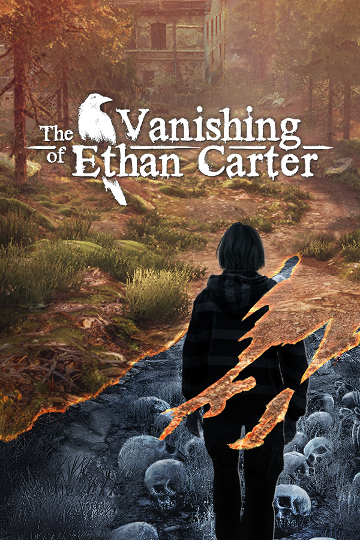

The Vanishing of Ethan Carter
The Vanishing of Ethan Carter
Details
|  | |
| Playtime | Not Played |
| Last Activity | Never |
| Added | 6/3/2022 4:21:14 |
| Modified | 6/14/2022 13:11:37 |
| Completion Status | Not Played |
| Library | Epic |
| Source | Epic |
| Platform | Epic Games PC (Windows) |
| Release Date | 9/25/2014 |
| Community Score | 86 |
| Critic Score | 82 |
| User Score | |
| Genre | Adventure Indie |
| Developer | The Astronauts |
| Publisher | The Astronauts |
| Feature | Achievements Cloud Saves Full Controller Support Remote Play On TV Single Player Trading Cards |
| Links | Community Hub Discussions Guides News Store Page PCGamingWiki Achievements |
| Tag | |
Description
GOOD NEWS EVERYONE: By purchasing the game, you actually get two games now: 1) The original The Vanishing of Ethan Carter, 2) The Unreal Engine 4 remaster called The Vanishing of Ethan Carter Redux. Please see this link for details.
The Vanishing of Ethan Carter is a first-person story-driven mystery game that focuses entirely on exploration and discovery. It contains no combat or explosions of any kind. If our game leaves any scars, we hope you won’t be able to see them.
You play the game as Paul Prospero, an occult-minded detective who receives a disturbing letter from Ethan Carter. Realizing the boy is in grave danger, Paul arrives at Ethan’s home of Red Creek Valley, where things turn out to be even worse than he imagined. Ethan has vanished in the wake of a brutal murder, which Paul quickly discerns might not be the only local murder worth looking into.
Inspired by the weird fiction (and other tales of the macabre) from the early twentieth century, The Vanishing of Ethan Carter aims to significantly evolve immersive storytelling in games. While it features a private detective and quite a few mental challenges, The Vanishing of Ethan Carter is not an especially puzzle-ridden game. Our focus is on atmosphere, mood, and the essential humanity of our characters.
Still, the discoveries won’t happen on their own, or without your help. Using both Paul’s supernatural skill of being able to communicate with the dead, and your own powers of observation, you will discover the mystery behind a trail of corpses, the roots of a dark ancient force lurking in Red Creek Valley, and the fate of a missing boy.
The Vanishing of Ethan Carter is a first-person story-driven mystery game that focuses entirely on exploration and discovery. It contains no combat or explosions of any kind. If our game leaves any scars, we hope you won’t be able to see them.
You play the game as Paul Prospero, an occult-minded detective who receives a disturbing letter from Ethan Carter. Realizing the boy is in grave danger, Paul arrives at Ethan’s home of Red Creek Valley, where things turn out to be even worse than he imagined. Ethan has vanished in the wake of a brutal murder, which Paul quickly discerns might not be the only local murder worth looking into.
Inspired by the weird fiction (and other tales of the macabre) from the early twentieth century, The Vanishing of Ethan Carter aims to significantly evolve immersive storytelling in games. While it features a private detective and quite a few mental challenges, The Vanishing of Ethan Carter is not an especially puzzle-ridden game. Our focus is on atmosphere, mood, and the essential humanity of our characters.
Still, the discoveries won’t happen on their own, or without your help. Using both Paul’s supernatural skill of being able to communicate with the dead, and your own powers of observation, you will discover the mystery behind a trail of corpses, the roots of a dark ancient force lurking in Red Creek Valley, and the fate of a missing boy.
Key Features
- Explore and interact with the beautiful yet ominous world of Red Creek Valley, which was created with the use of revolutionary photogrammetry technology that allows for nearly photorealistic environments.
- Communicate with the dead and see how they died in order to gather clues that help you piece together the truth behind Ethan’s disappearance -- and the fate of his family.
- Experience, in non-linear fashion, a story that combines the pleasures of pulp, private eye, and horror fiction, all of it inspired by writers such as Raymond Chandler, Algernon Blackwood, Stefan Grabinski, and H. P. Lovecraft.
- Conduct the investigation on your own terms and at your own pace. Although there are a few scary bits in the game, players will have no need for sedatives. Our game is less about terror and more about clammy unease.